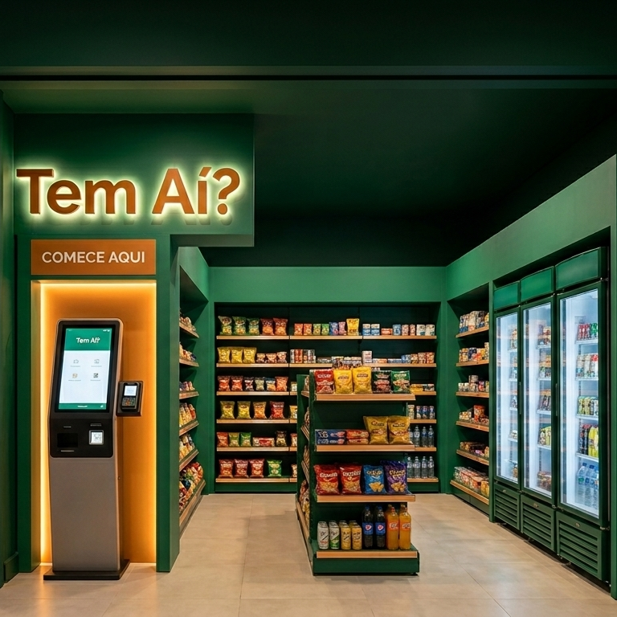
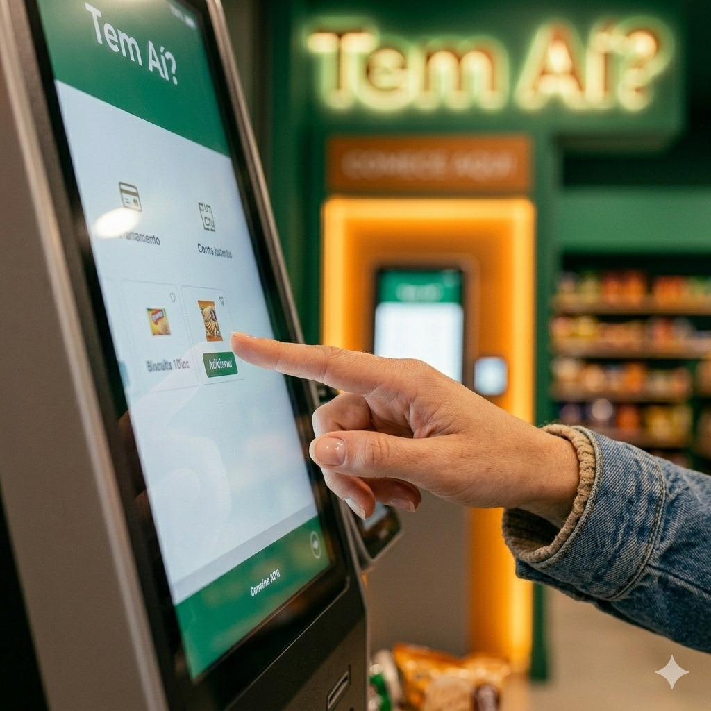
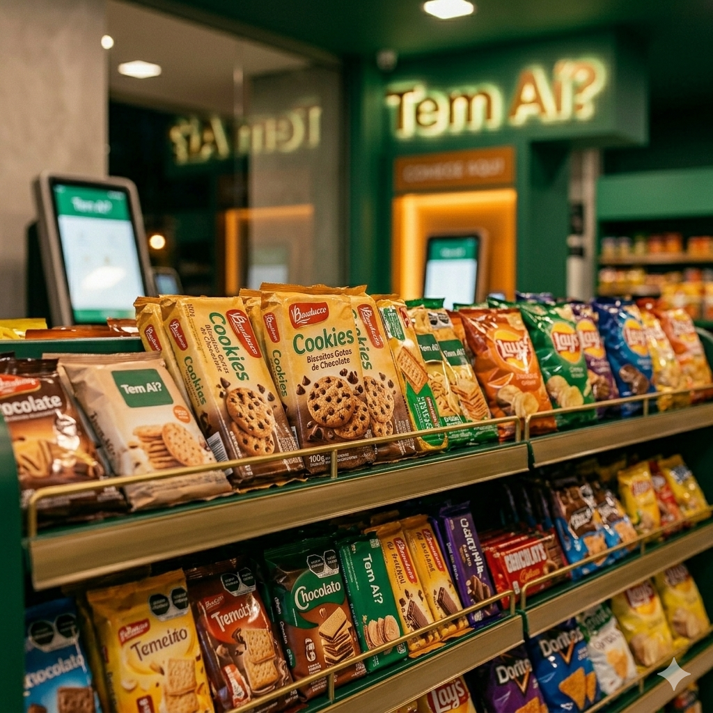

Tem Aí? — O mercado do seu condomínio,
muito descomplicado!
O que é o Tem Aí?
Tem Aí? é um sistema de gestão de inventário desenvolvido para mercados autônomos em condomínios. A plataforma permite organizar produtos, acompanhar níveis de estoque e oferecer uma experiência simples de autoatendimento para moradores.
O sistema oferece uma interface intuitiva que permite ao morador escolher produtos e finalizar sua compra de forma rápida. A proposta é tornar o processo de compra simples e eficiente, reduzindo o tempo entre a escolha do produto e o pagamento.

Interface Simples e Intuitiva para o Morador
Desde a Dona Maria até o Pedrinho, todo mundo pode aproveitar uma experiência simples e eficiente. Escolher seu produto e finalizar sua compra nunca foi tão fácil, rápido e intuitivo, tornando o processo muito mais acessível para qualquer pessoa. A proposta do Tem Aí? é justamente facilitar sua rotina, reduzindo o tempo gasto escolhendo produtos e pagando, para que você possa aproveitar melhor o seu dia e sair tranquilo para o abraço.

Tudo ao seu alcance - sem aperto no dia a dia
Todos os produtos necessários e essenciais para o dia a dia corrido, seja dentro ou fora de casa, reunidos em um só lugar para facilitar a sua rotina. Utilizando o Tem Aí?, você encontra tudo o que precisa para preparar suas refeições, cuidar do lar e otimizar seu tempo sem complicações. Chega de interromper a sua receita por conta de ingredientes faltando ou acabando — tenha sempre à mão os itens necessários e transforme cada momento na cozinha em uma experiência mais leve, ágil e prática.
